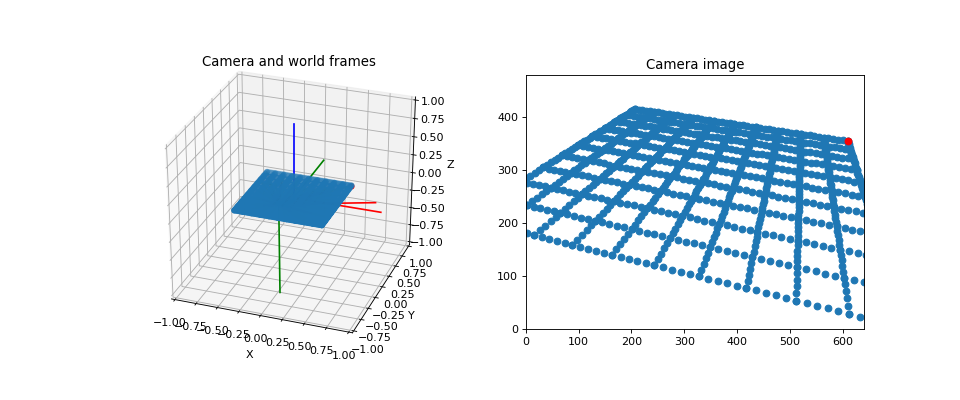

Camera¶
When we know the 3D position of a point in the world we can easily compute where we would see it in a camera image with the pinhole camera model. However, we have to know some parameters of the camera:
camera pose
focal length

sensor width and height
image width and height
The following example shows how a grid is projected on an image.
"""
================
Camera Transform
================
We can see the camera frame and the world frame. There is a grid of points from
which we know the world coordinates. If we know the location and orientation of
the camera in the world, we can easily compute the location of the points on
the image.
"""
print(__doc__)
import numpy as np
import matplotlib.pyplot as plt
from pytransform3d.rotations import matrix_from_euler_xyz
from pytransform3d.transformations import transform_from, plot_transform
from pytransform3d.camera import make_world_grid, world2image
cam2world = transform_from(matrix_from_euler_xyz([np.pi - 1, 0.2, 0.2]),
[0.2, -1, 0.5])
focal_length = 0.0036
sensor_size = (0.00367, 0.00274)
image_size = (640, 480)
world_grid = make_world_grid()
image_grid = world2image(world_grid, cam2world, sensor_size, image_size,
focal_length)
plt.figure(figsize=(12, 5))
try:
ax = plt.subplot(121, projection="3d", aspect="equal")
except NotImplementedError:
# HACK: workaround for bug in new matplotlib versions (ca. 3.02):
# "It is not currently possible to manually set the aspect"
ax = plt.subplot(121, projection="3d")
ax.view_init(elev=30, azim=-70)
ax.set_xlim((-1, 1))
ax.set_ylim((-1, 1))
ax.set_zlim((-1, 1))
ax.set_xlabel("X")
ax.set_ylabel("Y")
ax.set_zlabel("Z")
plot_transform(ax)
plot_transform(ax, A2B=cam2world)
ax.set_title("Camera and world frames")
ax.scatter(world_grid[:, 0], world_grid[:, 1], world_grid[:, 2])
ax.scatter(world_grid[-1, 0], world_grid[-1, 1], world_grid[-1, 2], color="r")
for p in world_grid[::10]:
ax.plot([p[0], cam2world[0, 3]],
[p[1], cam2world[1, 3]],
[p[2], cam2world[2, 3]], c="k", alpha=0.2, lw=2)
ax = plt.subplot(122, aspect="equal")
ax.set_title("Camera image")
ax.set_xlim(0, image_size[0])
ax.set_ylim(0, image_size[1])
ax.scatter(image_grid[:, 0], -(image_grid[:, 1] - image_size[1]))
ax.scatter(image_grid[-1, 0], -(image_grid[-1, 1] - image_size[1]), color="r")
plt.show()
(Source code, png, hires.png, pdf)
{kind=link}
{kind=link}
